arrow_circle_up
- Nézzük a következő könyvtárstruktúrát.
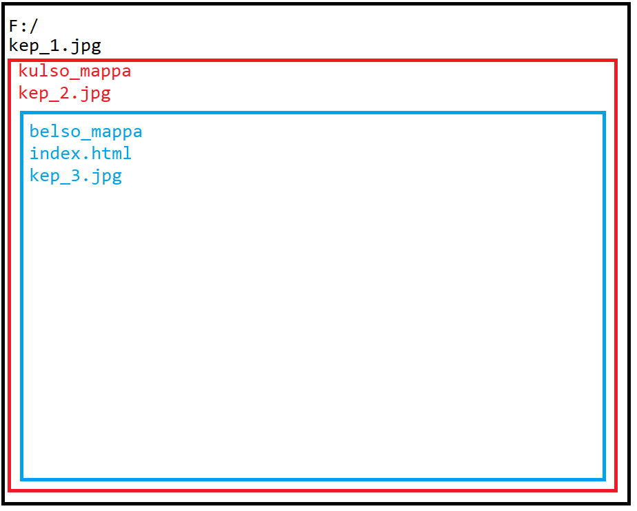
Abszolút file elérési útvonal:
-
Abszolút URL (absolute URL): az
erőforrás (resource) egy külső
tárhelyen (nem része az alkalmazást tartalmazó
könyvtárstruktúrának) található. Teljes elérési út (file path) megadása a gyökérelemtől, domain-től. Ebben az esetben
például egy C: meghajtón lévő
elemtől keressük a képeket.
-
F:/kulso_mappa/belso_mappa/kep_3.jpg
-
F:/kulso_mappa/kep_2.jpg
-
F:/kep_1.jpg
-
https://www.w3schools.com/images/img_girl.jpg
Relatív file elérési útvonal:
-
Relatív URL (relative URL): az
adott állományt tartalmazó könyvtárstruktúrában van a
hivatkozott erőforrás (resource).
-
Két esetet vizsgálunk: szerverrel futtatjuk az állományt
vagy File Managerből indítjuk. Mindig az
index.html állományba írjuk a
kódot. Nézzük először a következőt:
-
<img src="./kep_3.jpg" />
, ami pont ugyanaz, mint
-
<img src="kep_3.jpg" />
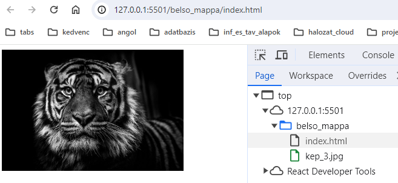
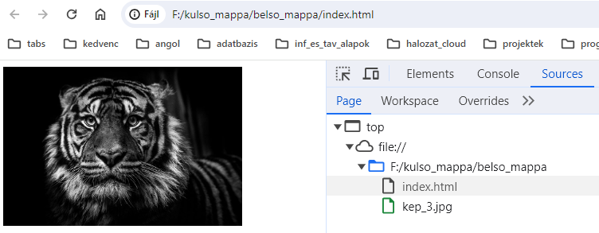
-
Nézzük a következőt:
-
<img src="../kep_2.jpg" />
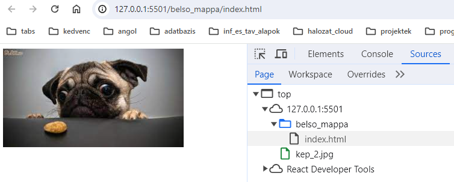
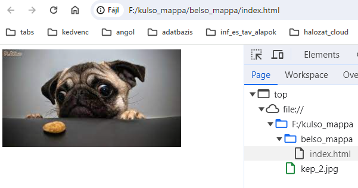
-
Nézzük a következőt:
-
<img src="../../kep_1.jpg" />
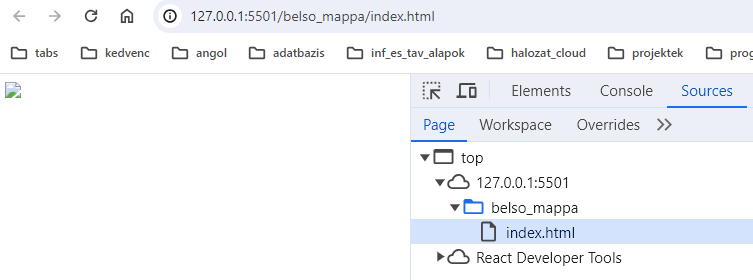
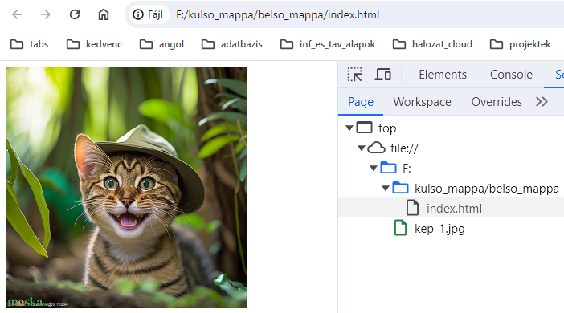
-
Viszont, ha következőt írjuk:
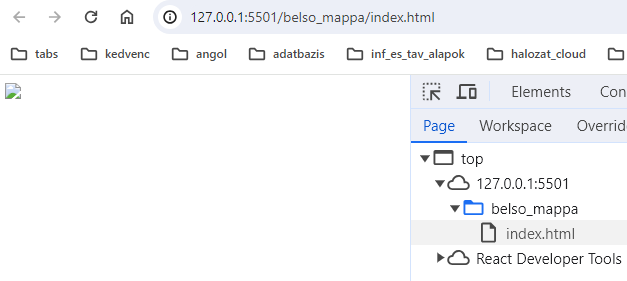
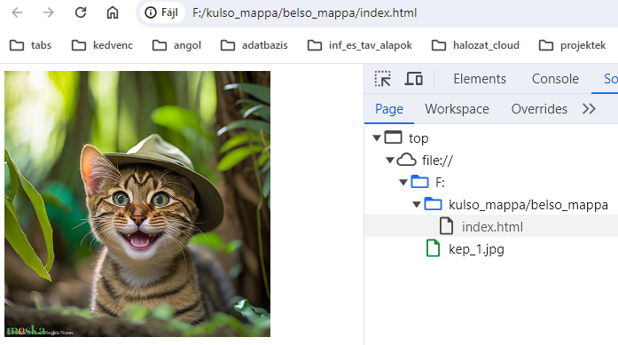
-
Viszont, ha következőt írjuk:
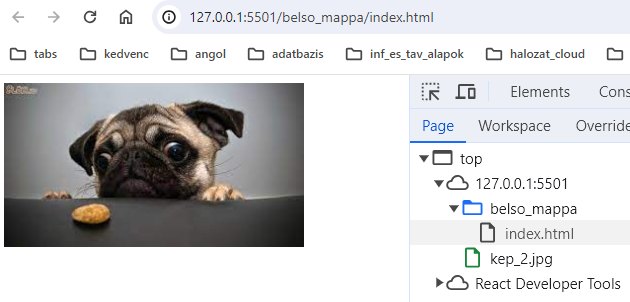
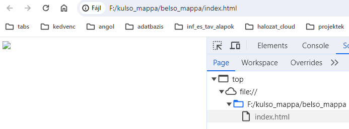
-
Viszont, ha következőt írjuk:
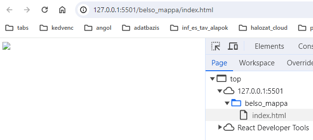
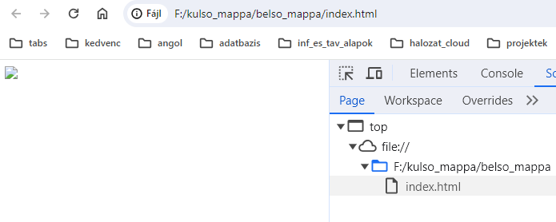
-
Következtetésként a következőt vonhatjuk le. A szerverrel
való indítás esetében a domain a
belso_mappa, mert Visual Studio
Code-ot kulso_mappa-ból
indítottuk, így szerver csak "eddig" lát el, míg a második
esetben a file://F, azaz a
gyökérkönyvtár.
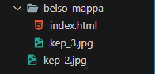
-
Indítsuk a szervert (Visual Studio Code)
belso_mappa-ból ekkor.
-
<img src="./kep_3.jpg" />
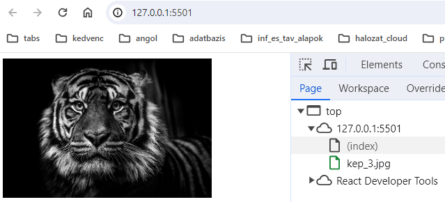
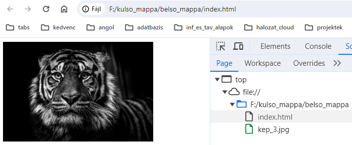
-
Legyen
-
<img src="../kep_2.jpg" />
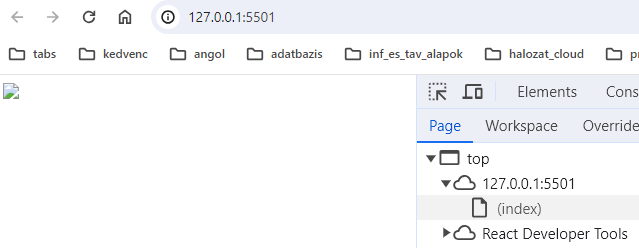
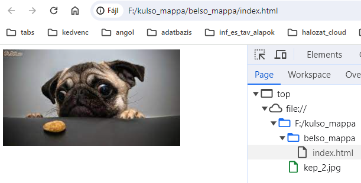
-
Legyen
-
<img src="../../kep_1.jpg" />
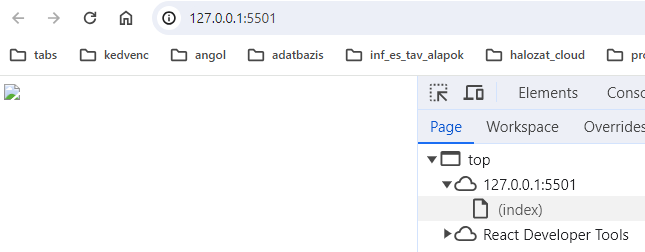
-
Nézzük a domain jelöléssel.
-
Nézzük a domain jelöléssel.
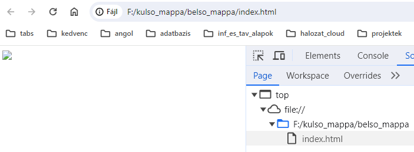
-
Nézzük a domain jelöléssel.
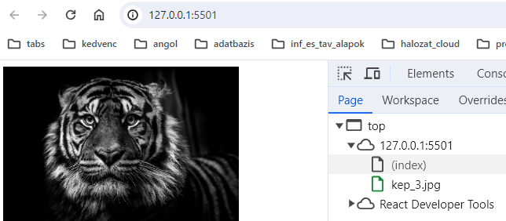
-
Következtetésként a következőt vonhatjuk le. A szerverrel
való indítás esetében a domain az
index.html "környezete", mert
Visual Studio Code-ot
belso_mappa-ból indítottuk, így
szerver csak "eddig" lát el, míg a második esetben a
file://F, azaz a gyökérkönyvtár.
-
Ezért mindig figyeljünk oda, hogy melyik mappából futtatjuk
az alkalmazást!
Források:
w3schools/html
mdn/html